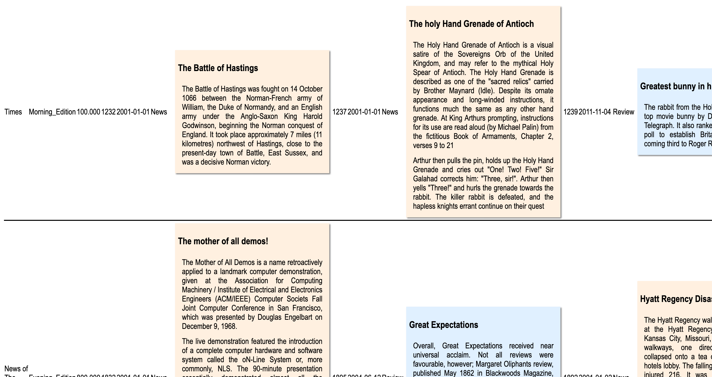
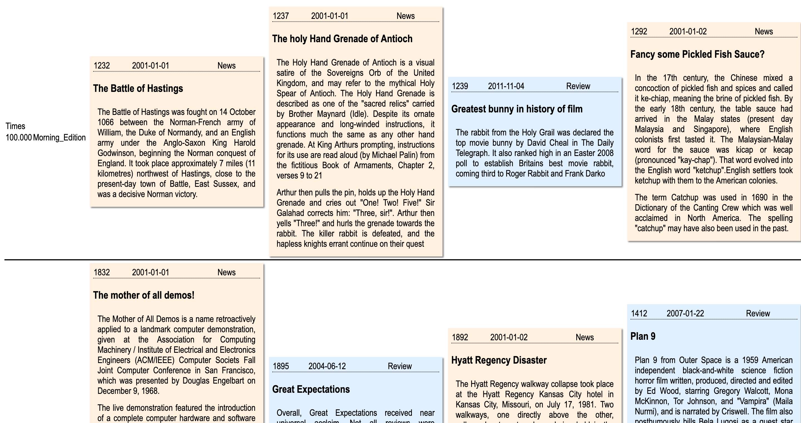
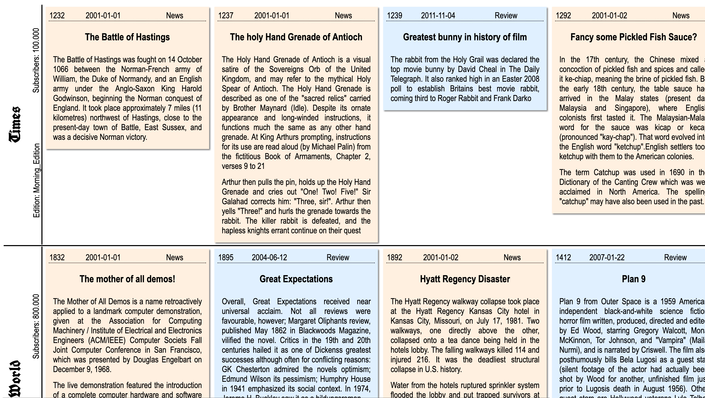
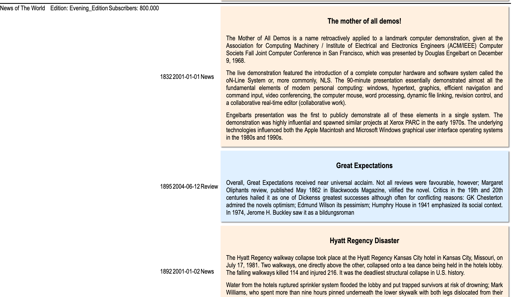
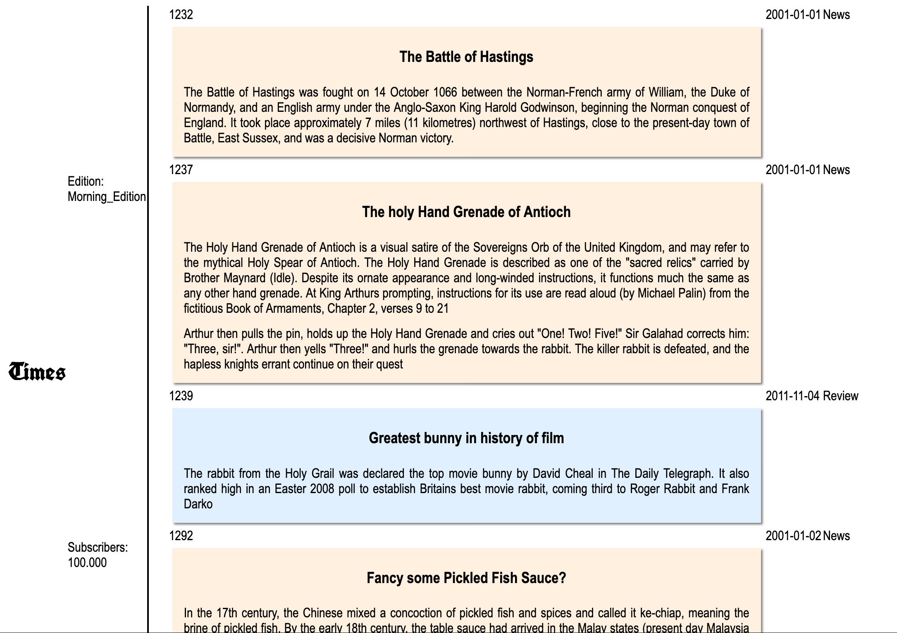
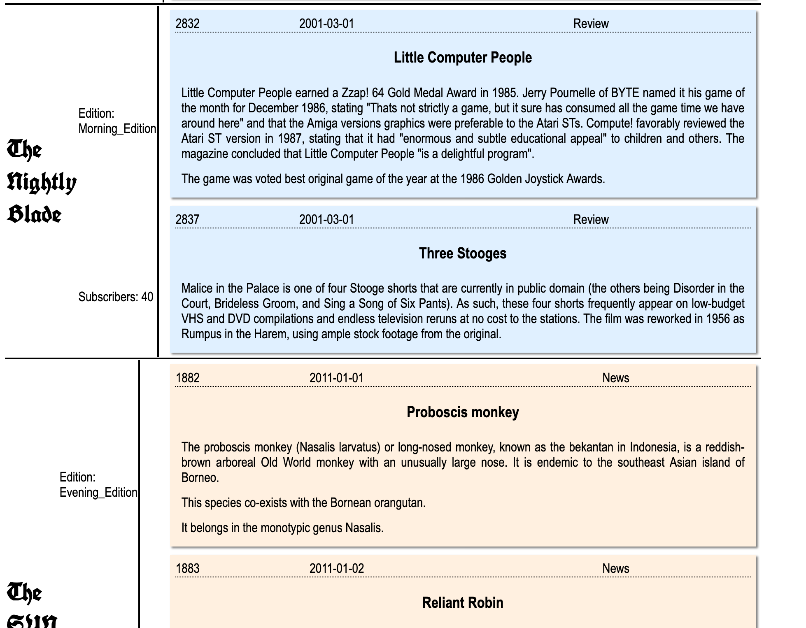
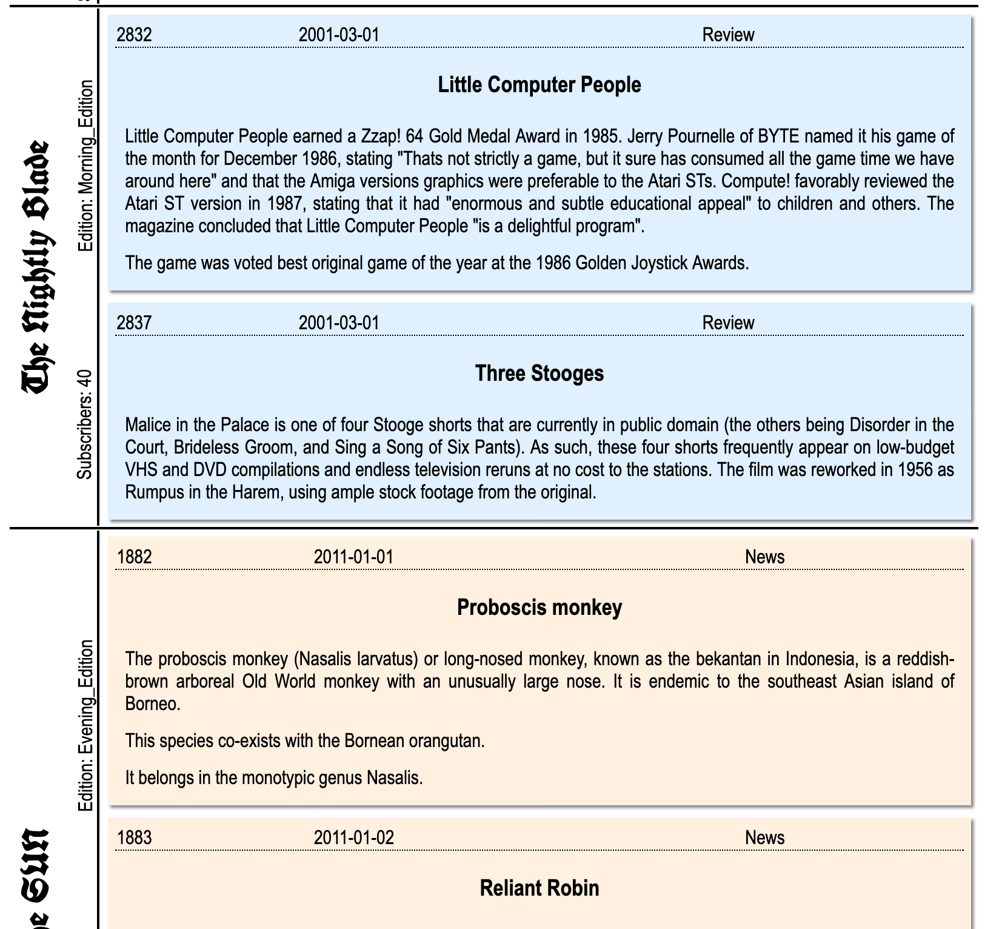

All of the screenshots below show acceptable styled pages. Documents are mostly identical, the main difference is in
the styling. In some cases headings were placed in separate tables.
Attributes (at least one attribute must be shown for each) must be present for both articles and newspapers.
| Description | Screenshot |
|---|---|
| Level 1 Styling of Articles but no styling of Attributes |  |
| Level 2 Heading Attributes |  |
| Level 3 Advanced Styling of Headings |  |
| Level 1 Styling of Articles but no styling of Attributes |  |
| Level 2 Styling of Articles and font styling of Attributes |  |
| Level 3 Styling of Articles and tables for attributes in headings |  |
| Level 4 Advanced Styling of Headings |  |